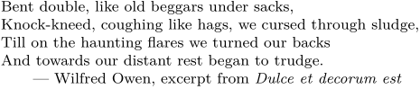

Syntax (autogenerated)
| \grabbufferdata[...][...][...][...] | |
| [...] | category |
| [...] | name |
| [...] | name |
| [...] | name |
Syntax
| \grabbufferdata[...][...][...] | |
| [...] | name of the buffer to store the text |
| [...] | string where the buffer contents start |
| [...] | string where the buffer contents end |
Description
This is a slightly low-level command to grab user input and store it in a buffer. It is different from \startbuffer because it allows one to use custom buffer start and end commands, instead of \startbuffer[X]...\stopbuffer. Use this command by defining the desired buffer start command to invoke \grabbufferdata.
One might think that if the buffer start command calls \grabbufferdata, the latter does not need to know the former. This is an understandable thought, but in the case of buffer nesting the information is still required.
Example
-
\setuppapersize[A6] \define\thisisthestart% {\grabbufferdata[mybuffer][thisisthestart][thisistheend]} % If you want to perform some action when the buffer ends % \let\thisistheend{...} \thisisthestart Bent double, like old beggars under sacks, Knock-kneed, coughing like hags, we cursed through sludge, Till on the haunting flares we turned our backs And towards our distant rest began to trudge. \rightaligned{--- Wilfred Owen, excerpt from {\it Dulce et decorum est}} \thisistheend \obeylines \getbuffer[mybuffer]
- 
See also
Help from ConTeXt-Mailinglist/Forum
All issues with: